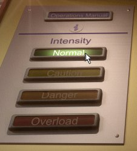
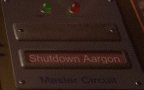

The next screen is the Skill Selection Control Panel.
Click one of the buttons shown below to choose your skill level. The actual screen may vary as each level pack can have it's own style of control panel. The one pictured is for the Aargon Deluxe levels. Regular level sets have 4 skill levels. In the Deluxe Set the skill levels are "Normal", "Caution", "Danger", and "Overload" with normal being the easiest levels.

The skill selection buttons and the instruction button (Normal skill level is being selected)
Above the skill selection buttons is a button to read these instructons. Simply click the instructions button to bring up this text.
On the far right-hand side of the control panel is a Quit button which can be used to exit this set of levels.

The quit or shutdown button
NEXT SECTION : Selecting a Puzzle (back to index)